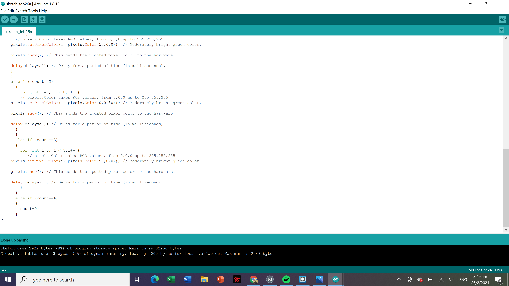

Final Module Project
Bill of materials
- LED Strip
- 7 dupont cables
- Arduino board
- Breadboard
- Push button
- USB power source
- 3mm transparent and white acryllic
- Grey fillihg for 3D printer
My final module project is called Jia Le's Mood lamp. It is a mood lamp that has 3 different variations of lights(blue,green,red) when the push button is pushed
In order to complete my mood lamp, I had to first create a sketch for my mood lamp

Project box fusion 360
For the sketch above,it is for the overall box. I placed two holes at the side as i had intended to place my push button within it and the usb power cable through the other hole.
Middle section of the box
For the sketch above, it is for the middle section of the box as i wanted to use it as a divide between the top portion of my box where i would place my led strips and the bottom portion of the box is where i place the arduino board and the breadboard. The hole in the middle section is supposed to allow the led strip to enter the top section of the box.
Fusion 360 of 3D printed part
For the sketch above, it is to print out the 3D printed part of my box by adding a letter L to paste it on my box to recognise that it is mine.
Source files
The second stage was to laser cut the sketch. I used 3mm white acrylic to form the box. Below are images of the box after forming it.
The third stage was to 3D print the L shape. Below is a picture of the file being sliced in the Cura.
It was quite hard to piece the acrylic pieces together as they would often fall apart.I decided to use super glue such that box does not fall apart after I have pieced it together.
The third stage was to program the arduino uno. I programmed the arduino uno such that the led strip will light up according to the different gradiances of blue after pushing the push button. Below is the code that i wrote down which i seeked reference from the internet on moodlamp neopixel codes.
`Below is a video of me running my mood lamp.
Everytime i press the push button the led changes color.
Final Look of my project
My final video
This is my presentation slide
 Moodlamp Presentation Slide
Moodlamp Presentation Slide
Challenges faced
Initially I had some troubles running my project due to some errors within my code. Thankfully, my lecturer gave me extra time to find out the errors within my code and gave me more time to work on the project which i eventually was able to complete successfully. I also only realised last minute that my box was too small to place my arduino board and breadboard at the bottom of the box which caused slight panic within me as I felt that the project would no longer work out. I decided to just place the led strip inside the holes and leave the breadboard and arduino board on the outside.
Looking back, I could have probably had implemented better time management which would allow me to not rush everything last minute and avoid making simple mistakes.
As for the possible developments in the future, I could probably make the mood lamp voice operated in wehich the light color changes when i speak to the sensors. I think this would be a really cool feature to implement as it makes it much more convenient to activate the lights.
Throughout this course, I have learnt plenty of skills like how to uese a 3D printer and the laser cutting process as well as how to code my own website using brackets and using arduino as well. I would like to thank my lecturer, Mr Steven Chew, who has been very patient with teaching me and guiding me when I am in doubt. Hopefully, I would be able to apply these skills in the future and attend such a course again.